REVIEW
ความน่าสนใจของป่าในกรุง
REVIEW ป่าในกรุง
ถ้าเป็นคนที่รักธรรมชาติหรือกำลังมองหาสถานที่พักผ่อนที่เต็มไปด้วยธรรมชาติไม่ใกล้ไม่ไกลตัวเราขอเเนะนำ ป่าในกรุง ป่าในกรุงเป็นสถานที่เรียนรู้เชิงนิเวชและเป็นสถานที่ท่องเที่ยวเชิงป่าที่น่าสนใจที่หนึ่ง วันนี้เรามีภาพบรรยากาศมาโชว์ให้ดูกัน ภายในถือได้ว่าร้อนพอสมควรเลย แนะนำให้พกร่มหรือหมวกติดตัวมาด้วย
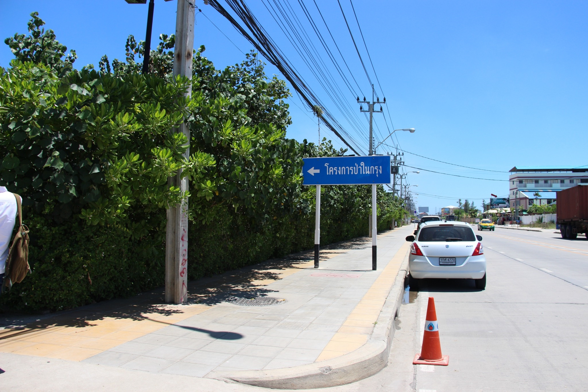
สิ่งเเรกเมื่อมาถึงป่าในกรุงคือต้องมาลงทะเบียนก่อนเลยโดยจุดลงทะเบียนนี้จะตั้งอยู่ด้านหน้ามีพี่ๆเฝ้าจุดลงทะเบียนชวนคุยสนุกๆด้วย
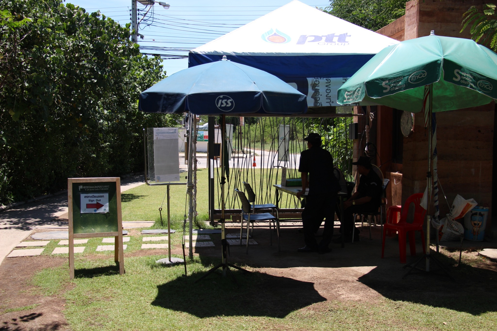
เมื่อเดินเข้าไปก็จะเจอกับต้นไม้ตั้งเเต่ต้นทางเลย อารมณ์เหมือนมาผจญภัยเลย
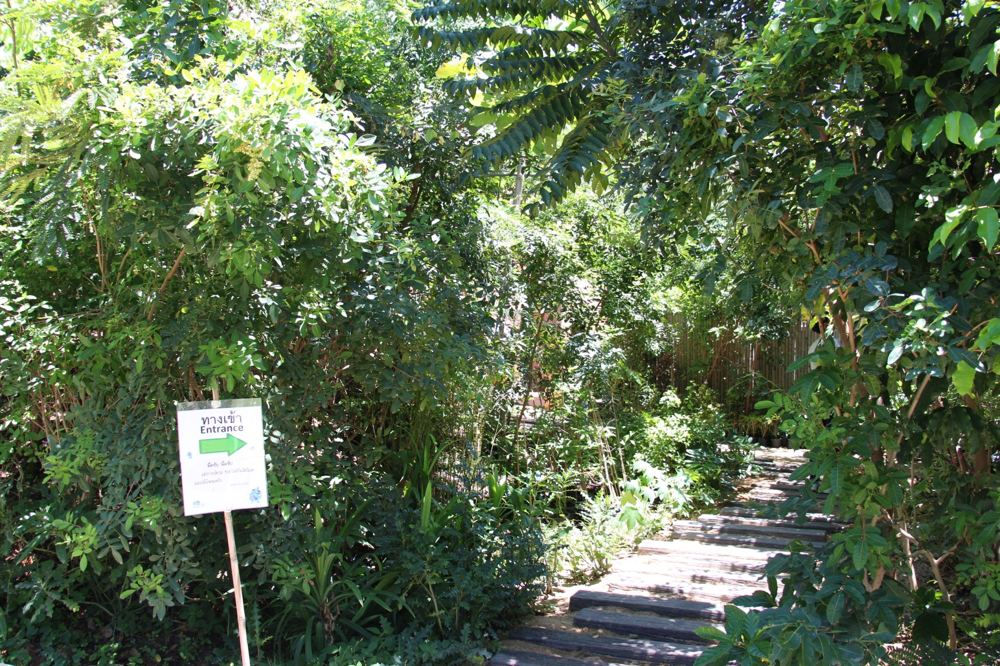
ถัดมาจะเป็นกำเเพงสูง ซึ่งที่ข้างกำเเพงจะมีเมล็ดพันธุ์ไม้ต่างๆให้ศึกษาหาความรู้กันอีกด้วย เเถมมี QR CODE ให้สเเกนดูข้อมูลด้วยนะล้ำสุดๆ ยังมีจุดบริการน้ำดื่มฟรีข้างๆอีกด้วย
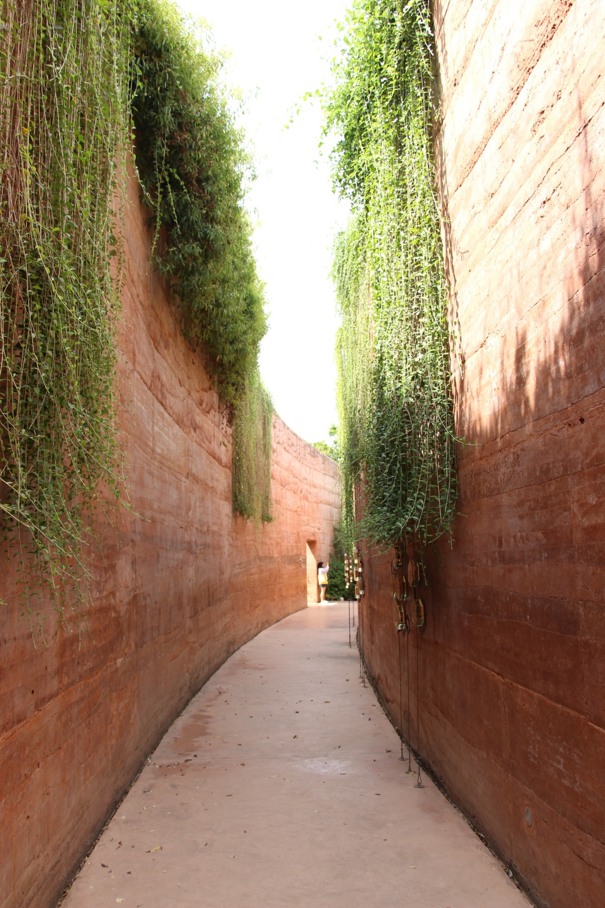
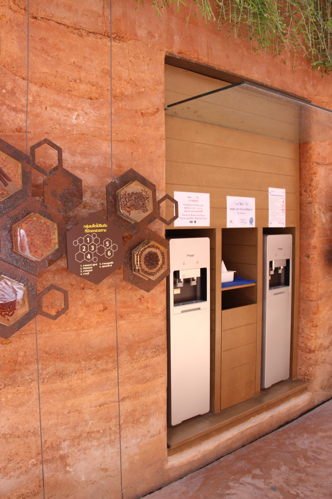
เมื่อเดินเข้าไปอีกก็จะเจอกับห้องนิทรรศการภายในห้องจะจัดเเสดงความรู้เกี่ยวกับป่าไม้เเละเรื่องของมลพิษ
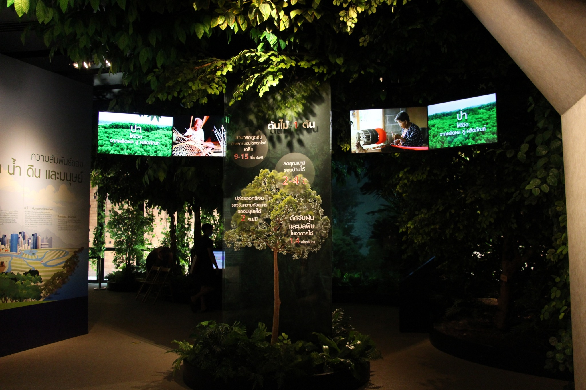
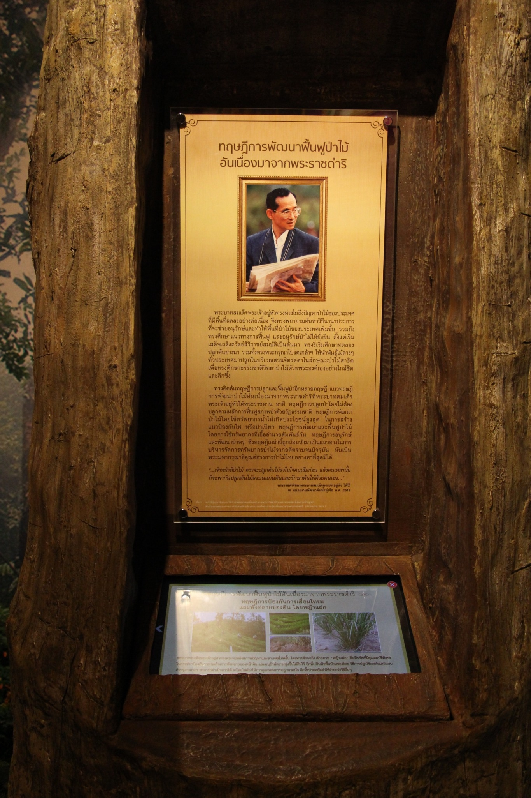
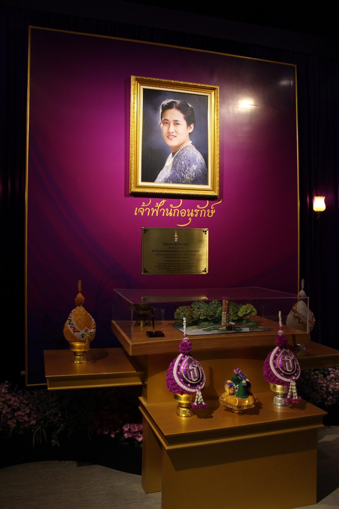
เเละเมื่อมองไปฝั่งตรงข้ามกับห้องนิทรรศการ จะเป็นห้องฉายภาพยนตร์ เป็นภาพยนตร์สั้นที่ดีเรื่องหนึ่งเลยประทับใจสุุดๆ ห้องนี้จะเปิดเป็นรอบๆนะครับ
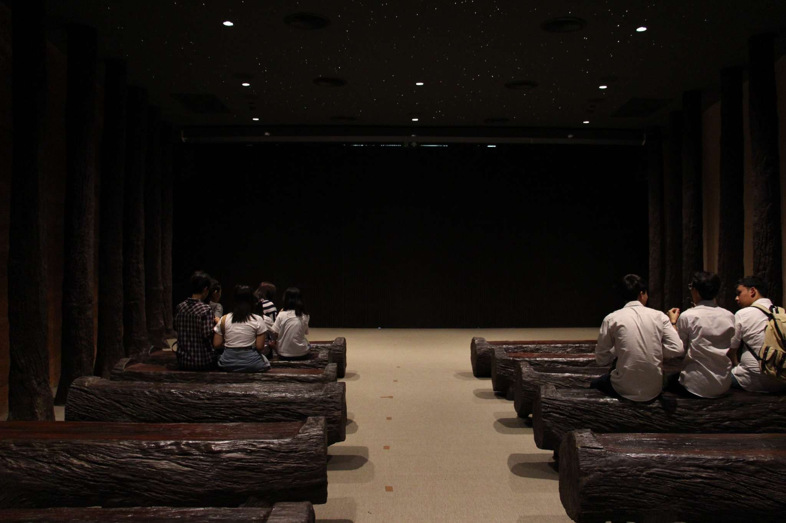
ส่วนต่อไปจะเป็นส่วนของ skywalk ที่ทำให้เราเห็นพื้นที่ทั้งหมดของป่าในกรุงเลยก็ว่าได้ และระหว่างทางเดิน ก็ยังมีป้ายให้ความรู้ต่างๆอีกด้วย
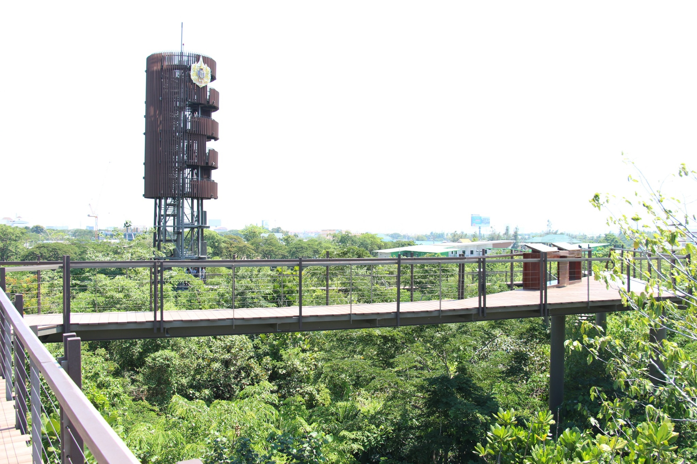
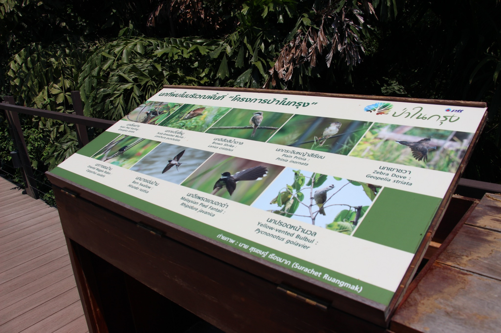
สำหรับใครที่อยากเห็นวิวแบบ 360 องศา จากที่สูง ที่นี่ก็ยังมีหอคอยให้เพื่อนๆ ได้เดินขึ้นไปชมอีกด้วยนะ
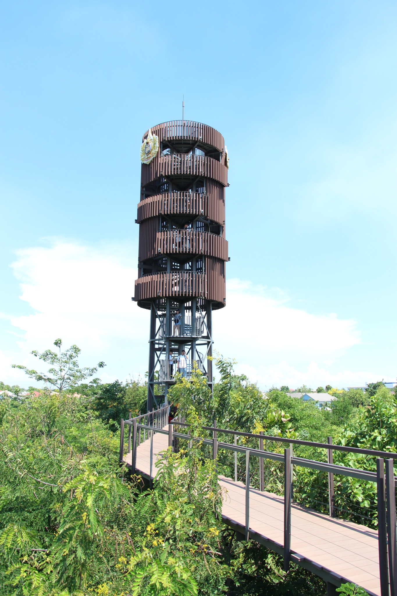
ถือว่าเป็นสถานที่ที่ดีเเห่งหนึ่งในกรุงเทพเลยใครที่พอมีเวลาว่างๆก็ลองไปชมดูกันนะ ที่นี่เปิดให้เยี่ยมชมทุกวัน ยกเว้นวันจันทร์ และไม่มีค่าใช้จ่ายครับ
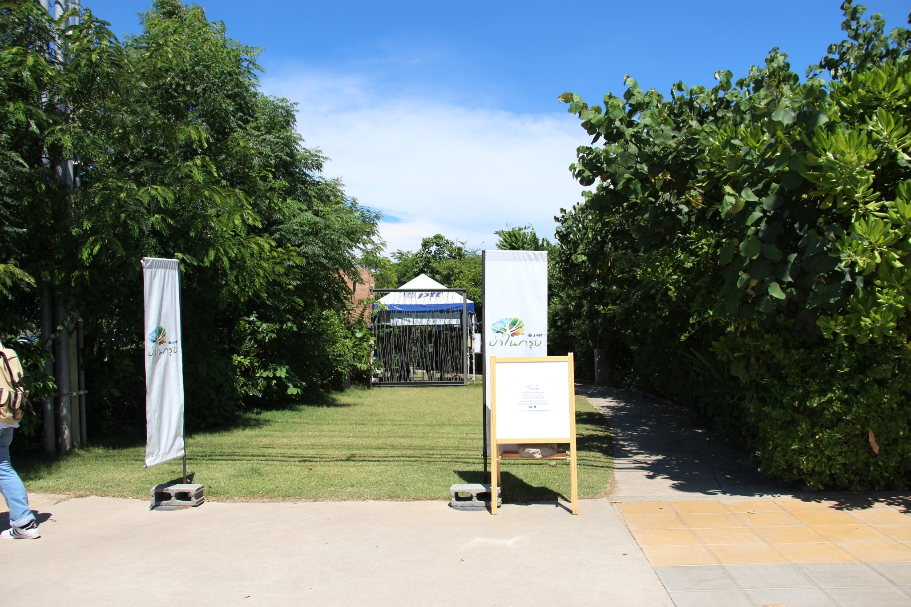